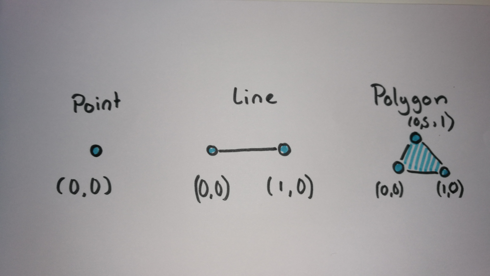
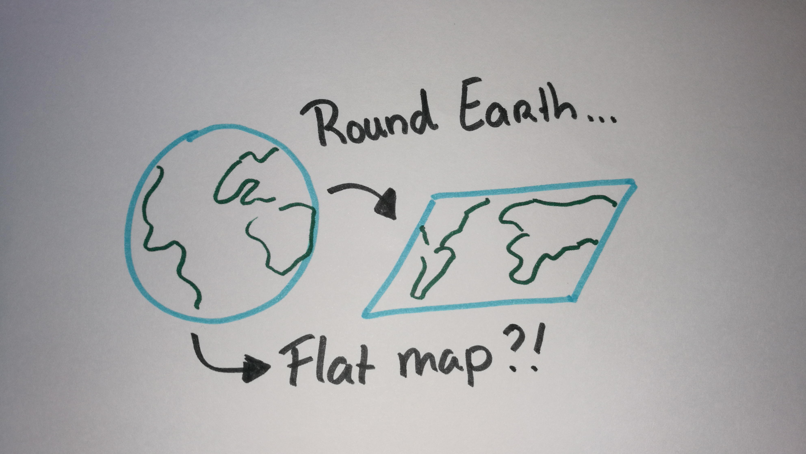
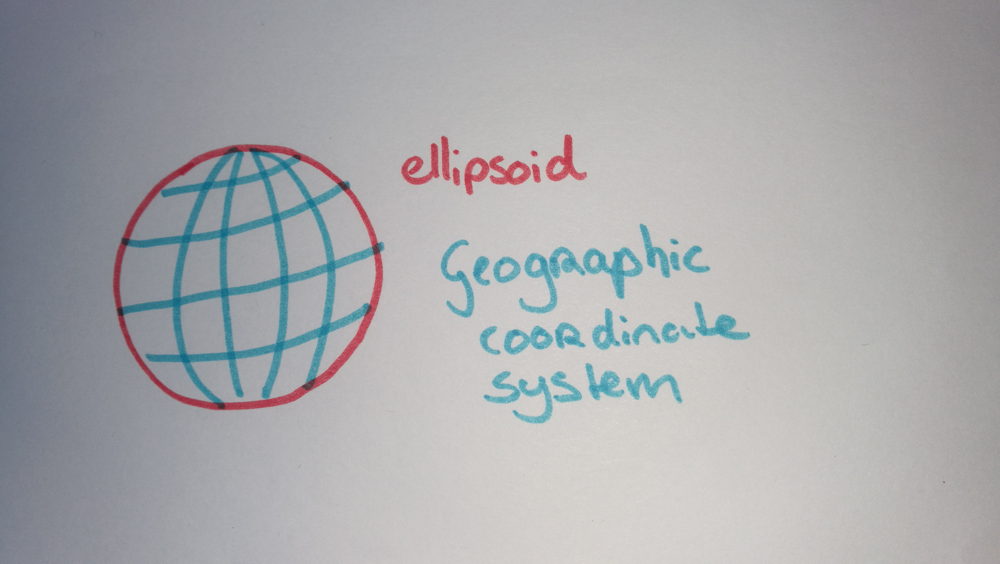
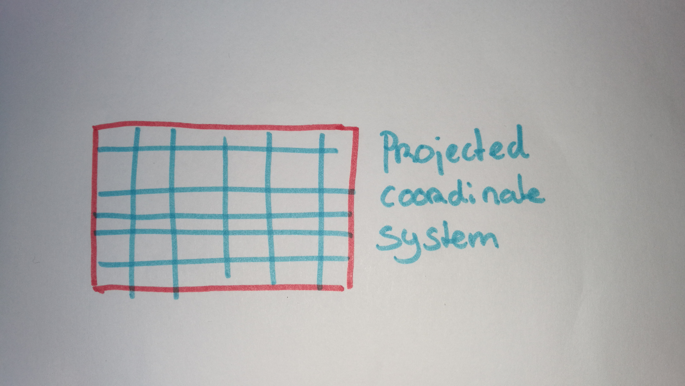

Maps on the Web!
Presentatie en workshop voor Provincie Zuid-Holland
Door: Niene Boeijen
Deze presentatie en workshop materialen:
www.github.com/NieneB/pzh_web_map
Wie ben ik?


Wat gaan we doen vandaag?
Doel workshop
Aan het einde van deze workshop heb je je eigen werkende web pagina met een interactieve kaart. De kaart bevat de officiële Nederlandse achtergrondkaart van PDOK én een WMS laag van GIS afdeling. Dit allemaal in de Nederlandse RijksDriekhoekstelsel projectie.

Beginners

Je hebt geen uitgebreide voorkennis nodig van JavaScript, HTML, CSS, Leaflet.js, de ArcGIS JavaScript API of WMS en WFS servers. Deze workshop helpt je met de eerste kennismaking hiervan.
Laten we beginnen!

Het Web Map Universum!
Het Web Map Universum!
Data Design Code
GeoData van Desktop naar het Web
Doel >> Functionaliteit >> Mapping Technologie >> Design

Doel?
Veel manieren om geo-data op het web te krijgen!
- Interactieve/statische web map
- Web GIS applicatie
- WMS/WFS
- Download link
- Animated, real time
- Collaborative web maps
- Online atlasses
- Infographic, plaatje, video, gif
Data Code Design
- Laad de data
- Maak dingen werkend
- Maak dingen mooi
Web Mapping
- snelheid en schaalbaarheid
- Data-gestuurd
- Responsive ontwerp
- Gepersonaliseerd


There has never been more open data available than at this moment in time, and everyone from global NGOs to armchair hobbyists are using that data to create maps. [source]
Cartografie is geen niche meer:[source]
- Big data
- Massaconsumptie
- Open source sofware
- Open data
Geo Data = Data + Location
Vector vs Raster

Maps = Collection of Geo data
Maps organize complex data about the environment.
Reveal patterns and relationships.
Maps allow us to communicate about location using a common framework
Coordinate system
Communicate locations & distances on the Earth's surface
Shape of the earth?

The real shape of the earth is too complex to be useful as a reference for measurement..
Geographic coordinate system
3D model
Longitude Latitude
Projected coordinate system
Mathematical projection / translation
2D
Geographic Coordinate System:
WGS84 EPSG:4326
Lon Lat in decimal degrees
GPS
Standard way to store most geodata for the Web:
{
"type": "Feature",
"geometry": {
"type": "Point",
"coordinates": [5.2394137,52.0819662]
},
"properties": {
"name": "Hotel Theater Figi"
}
}Projected Coordinate System:
Spherical/Web Mercator EPSG:3857
Square, scale not relevant, shapes important

We store data in EPSG:4326, but display it in EPSG:3857!
Why is Mercator wrong?
Projected Coordinate System:
RD New EPSG:28992
Netherlands!


Geographic Coordinate System:
WGS84 EPSG:4326
Projected Coordinate System:
Web Mercator EPSG:3857
Projected Coordinate System:
RD New EPSG:28992
What is a web map?
Analogue paper maps
| Digital maps | VS | Web Maps |
|---|---|---|
| Data | Tiles, styles and servers | |
| On the computer | View in a browser | |
| Calculate, analyze | scroll, pan, zoom |

openstreetmap.org
google.com/maps
a little History
Digital maps
GIS software
GIS on the Web is not user friendly..
1996 Mapquest first with a web service!

But really slow to load..
in 2004 Endoxon found a way for quick online mapping! map.search.ch
2005 Google Maps took over!
The solution?
Tiles!
Tiles
All tiles size 256x256 pixels
Placed in a grid, sharing boundaries
Seamless map
All these little tiles load way faster than one big map!
We call this slippy maps
Zoom levels
Each zoom level has its own set of tiles!
Zoom level 0: 1 tile for the whole world.
Increases exponentially...
Zoom level 1: 4 tiles
Zoom level 2: 16 tiles
etc.
 Map with tile bounds
Map with tile bounds
Styling & Serving tiles
Tiles are styled and rendered in advance
Tiles are just images on the web
http://tile.openstreetmap.org/5/16/10.png
{kind=link}
/z/x/y

Layers!
Base Layer
Raster

Data Layer / Feature Layer
Vector

Summary
Web Map Building blocks
Data, styled, tiles, server:
Base Layer
Additional Data:
Vector Layers
Interface and Interaction
Zoom, panning, clicking etc.

Serving data
WMS WFS WMTS
How to bring this all together?
JavaScript!
Puts it all together,
Tiles, content, interaction

Making a Web Page


New to HTML & CSS?
Start with Making a web page
Or use Code Academy

Maps with JavaScript
JavaScript Library
Including a JavaScript library in your code is like copying and pasting someone else's code into yours. You have access to everything in that library.
In our case, it's a bunch of cool tools to make web maps and give them familiar functionality.
JavaScript Libraries for Mapping
Leaflet.js
An Open-Source JavaScript Library for Mobile-Friendly Interactive Maps
simplicity, performance and usability
Developed by: Vladimir Agafonkin.
Weighing about 38 KB of JS.
Has all the mapping features most developers ever need.
Can be extended with Plugins
Well documented
What Leaflet does not do:
Provide data for you.
Provide the basemap.
Its not GIS
Leaflet is a framework
ArcGIS JavaScript API
ESRI StoryMaps
R Shiny applicatie
https://developers.arcgis.com/javascript/Let's Map!
Everything is on Github
Github?!

Used for code.
Version control.
Sharing.
Documentation.
Use Sublime Text
NOT Notepad+ ...
See Blackboard!
Base map = tiles already on the internet
Custom data : Feel free to use your own!
NOTE:
Not to big datasets
Export to GeoJSON: WGS84
Remove any not used attributes first!
Points, Polygons or Lines?
Attribute names are crucial! simple, short, no spaces or symbols
Running a local server
C:\Python27\ArcGIS10.5\python -m SimpleHTTPServer
Problems or questions?
Use the INTERNET!
Use the Leaflet documentation!
StackOverflow is awesome!
Ask me
Be creative!

There is more to find on the Internet
Do not keep yourself to the assignments!!
Presentation |
http://bit.ly/2uF2IhL |
Workshop |
http://bit.ly/2viXRGF |
or
github.com/NieneB/webmapping_for_beginners
More info?
My lists of
interesting links, workshops, presentations and background information:
for webmapping in general and d3 & Leaflet
Feel free to contact me!
Thank you!
Niene Boeijen
niene@webmapper.net